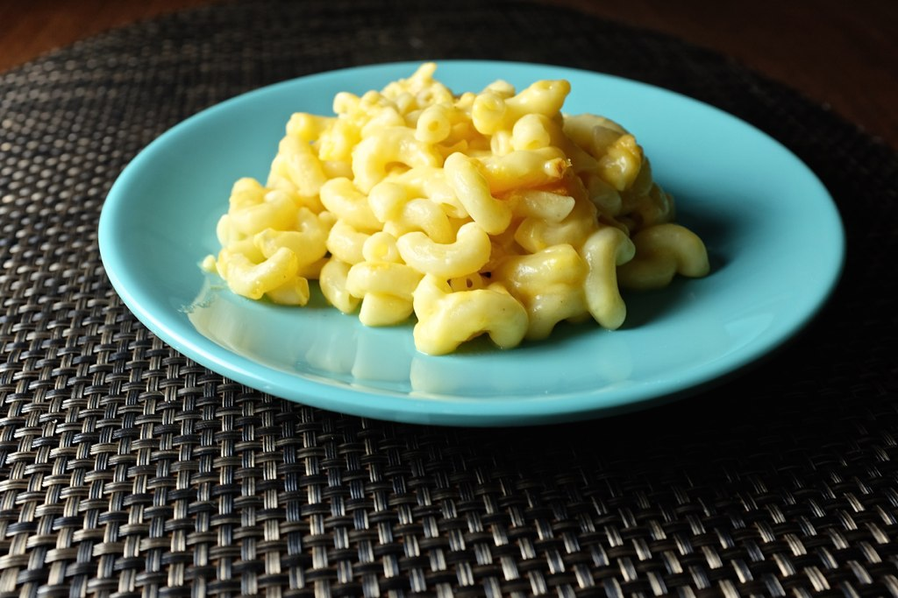

Mac-N-Cheese

Mac-N-Cheese is a popular dish,
particularly served to families
from pre-made boxes. However, you
may find it tastes better made from
scratch.
Ingredients
- Uncooked Macaroni
- Butter and Flour
- Milk
- Cheese
- Seasonings, such as salt and pepper
and white paprika
- Bread Crumbs
Instructions
- Boil the noodles, drain, and
transfer to a prepared baking dish
- Make the cheese sauce, pour the sauce
over the noodles and stir
- Make the topping, spread
it over macaroni and cheese
and sprinkle with paprika
- Bake the mac and cheese until
the topping is golden brown
Home
Instructions from Allrecipes